Лист моделей
Здесь можно рассмотреть предметы «Белой Совы» по отдельности. У объектов из кода указано, какие детали можно перенести в Blender или Tripo.

Мишаня
Лыжник. Модель меню и запечённая анимация спуска.

Белая Сова
Сноубордистка. Модель меню и запечённая анимация спуска.

Лыжник
Участник движения и инструктор лыжной группы.

Ребёнок на лыжах
Едет следом за инструктором.

Сидящий лыжник
Встречается у края и в эпизоде с аптечкой.

Юный сноубордист
Участник группы на досках.

Взрослый сноубордист
Попутчик на трассе.

Инструктор на доске
Ведёт группу. Цвета курток меняются кодом.

Ратрак
Едет попутно или навстречу.
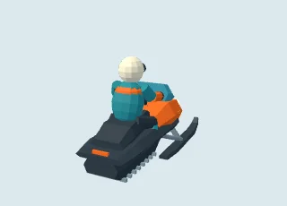
Лесной патруль
Снегоход с водителем, занимает одну полосу.

Снегоход игрока
Отдельный кузов. За рулём выбранный герой.
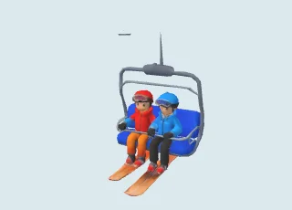
Кресло подъёмника
Движется по тросу.
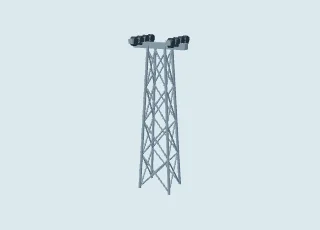
Опора подъёмника
К опорам привязана линия троса.

Заснеженная ель
Первый вид леса.

Высокая сосна
Формирует внешний край лесной тропы.
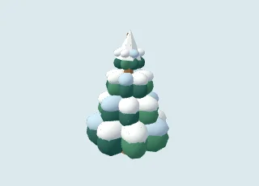
Молодая ель
Более низкое дерево на проходах.

Обычный трамплин
Импортированная модель на обычных трассах.

Широкий валун
Препятствие с низким силуэтом.

Высокий валун
Второй вариант камня.

Снеговик
Бросает снежки. В бонусе его можно сбить.

Горная собака
Перебегает трассу.
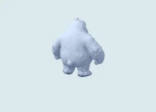
Йети
На буграх пересекает следы перед игроком. На вершине и ночью машет у края.
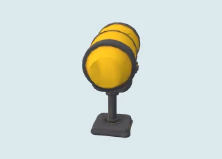
Снежная пушка
Препятствие с выбросом снега.

Мандаринка
Валюта. В бонусе участвует в серии.
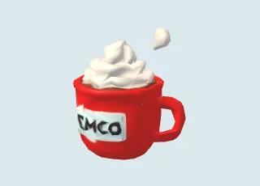
Кофе
Ускоряет героя.
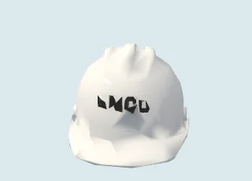
Каска
Дополнительная жизнь.
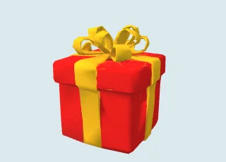
Подарок
Особенно ценен в заезде на снегоходе.
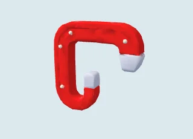
Магнит
Притягивает мандаринки.
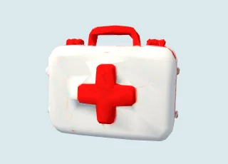
Аптечка патруля
Белый кейс из Tripo Studio. Подбор у упавшего открывает правило FIS №9.
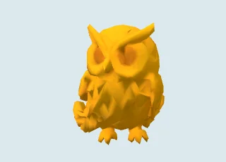
Летящая золотая сова
Модель из Tripo Studio, парит над трассой. Поимка открывает снегоход.
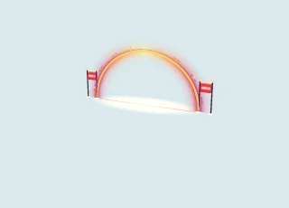
Красные ворота
Стойки и флаги можно заменить модульной моделью. Ореол и ширина прохода меняются в игре.
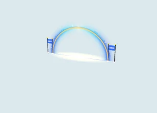
Синие ворота
Вторая расцветка слаломной пары.
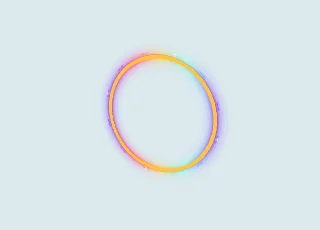
Воздушное кольцо
Кандидат для резного обода с фасками. Свечение и диаметр зависят от прыжка.
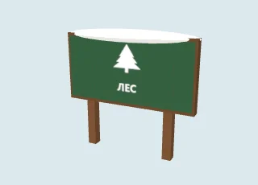
Указатель леса
Кандидат для деревянной рамы со снежной шапкой. Надпись и стрелка меняются.

Указатель бугров
Общая модель рамы пригодится для разных этапов.

Указатель парка
Высокий вариант указателя.
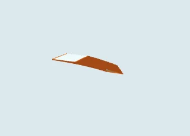
Бокс
Можно моделировать боковины. Верх совпадает с игровой поверхностью.

Трамплин сноупарка
Три высоты. Для замены подойдут накладки на борта, профиль отрыва задаёт физика.

Отдельный бугор
Сугроб, который Мишаня может снести.

Поле гребней
Непрерывный рельеф совпадает с поверхностью столкновения.

Защитная сетка
Кандидат для стоек и креплений. Длина барьера переменная.

Арка этапа
Кандидат для фирменной деревянной арки. Название зависит от этапа.
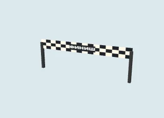
Финиш
Хороший кандидат для праздничной финишной конструкции.

Фонарь
Повторяемый объект. Один недорогой GLB может заменить всю серию.

Дальний посёлок
Кандидат для набора из нескольких сахалинских домиков.

Горы и долина
Дальний план. Важны крупные силуэты и низкая стоимость отрисовки.
Полотно трассы
Изгибы, уклон и борта повторяют физическую трассу.
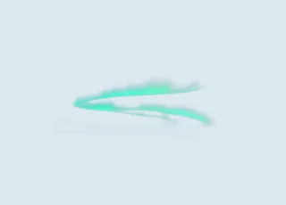
Северное сияние
Полупрозрачная рисованная текстура на плоскости.
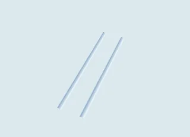
Следы лыж
Повторяющиеся отпечатки на снегу.
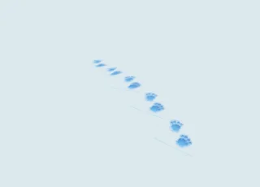
Следы йети
Предупреждают, с какой стороны выйдет йети.
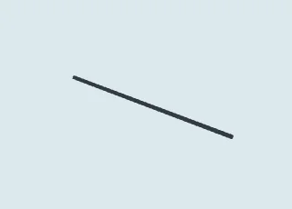
Трос подъёмника
Соединяет соседние опоры точно по высоте.

Лыжа
Геометрия меню и запасной позы. В запечённом движении используется снаряжение Blender.

Сноуборд
Доска для меню и запасной позы.

Лыжная палка
Длина и направление зависят от хвата.

Снежок
Снаряд снеговика.
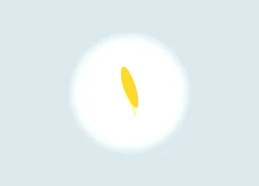
Золотое перо
Коллекционная находка. Кандидат для скульптурной модели с рельефом опахала.

Коллекционная буква
Динамическая буква из собираемого слова.

Счёт, каски и мандарины
Плоские значки и табло интерфейса для чтения на телефоне.

Снежные частицы
Снегопад, брызги и салюты используют частицы.
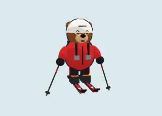
Мишаня
Форма из кода до загрузки основной модели.
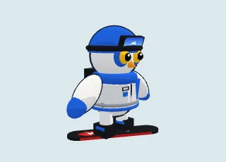
Сова
Форма из кода до загрузки основной модели.
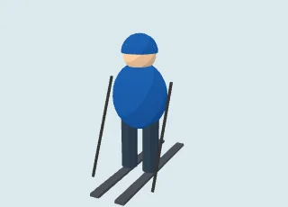
Лыжник
Форма из кода до загрузки основной модели.
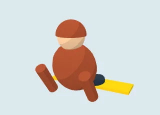
Сидящий лыжник
Форма из кода до загрузки основной модели.
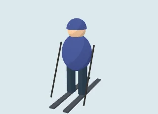
Ребёнок
Форма из кода до загрузки основной модели.
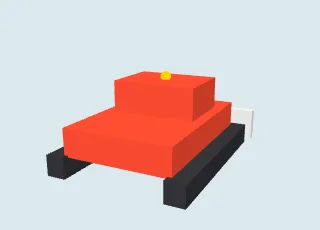
Ратрак
Форма из кода до загрузки основной модели.
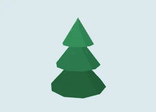
Ель
Форма из кода до загрузки основной модели.
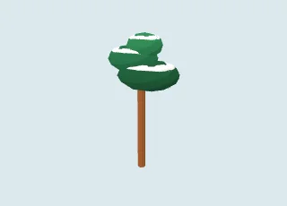
Сосна
Форма из кода до загрузки основной модели.
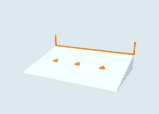
Трамплин
Форма из кода до загрузки основной модели.
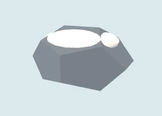
Валун
Форма из кода до загрузки основной модели.
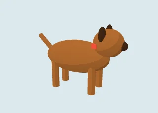
Собака
Форма из кода до загрузки основной модели.
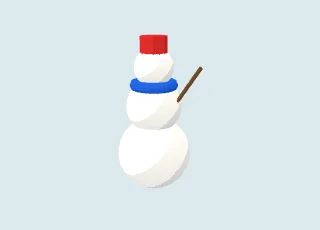
Снеговик
Форма из кода до загрузки основной модели.
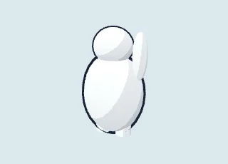
Йети
Форма из кода до загрузки основной модели.
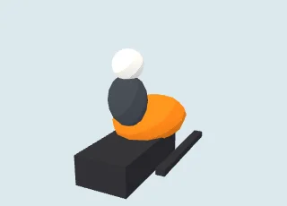
Патруль
Форма из кода до загрузки основной модели.
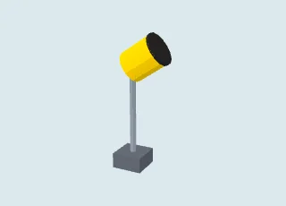
Пушка
Форма из кода до загрузки основной модели.
Аптечка
Форма из кода до загрузки основной модели.
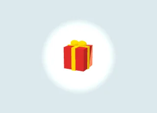
Подарок
Форма из кода до загрузки основной модели.
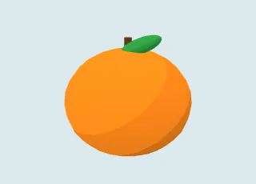
Мандаринка
Форма из кода до загрузки основной модели.
Каска
Форма из кода до загрузки основной модели.
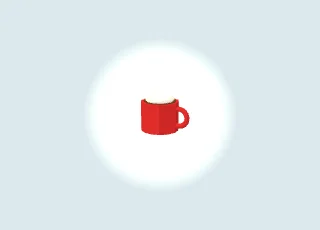
Кофе
Форма из кода до загрузки основной модели.
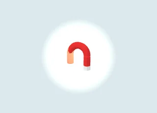
Магнит
Форма из кода до загрузки основной модели.
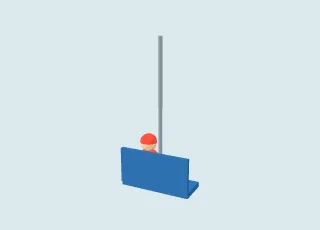
Кресло
Форма из кода до загрузки основной модели.
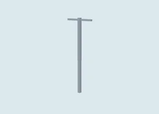
Опора
Форма из кода до загрузки основной модели.